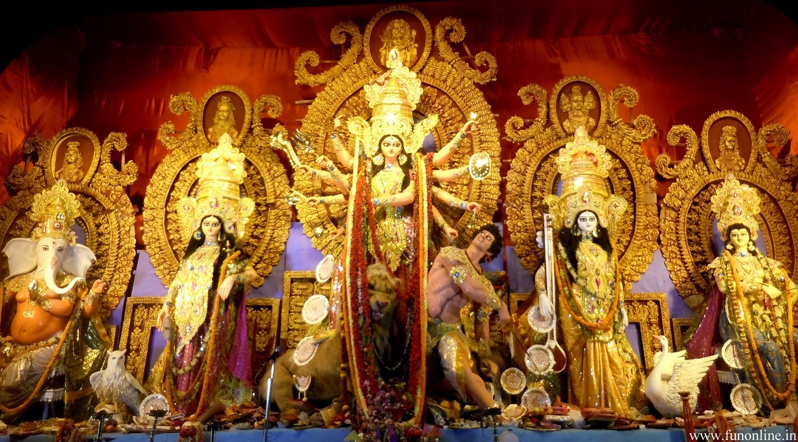
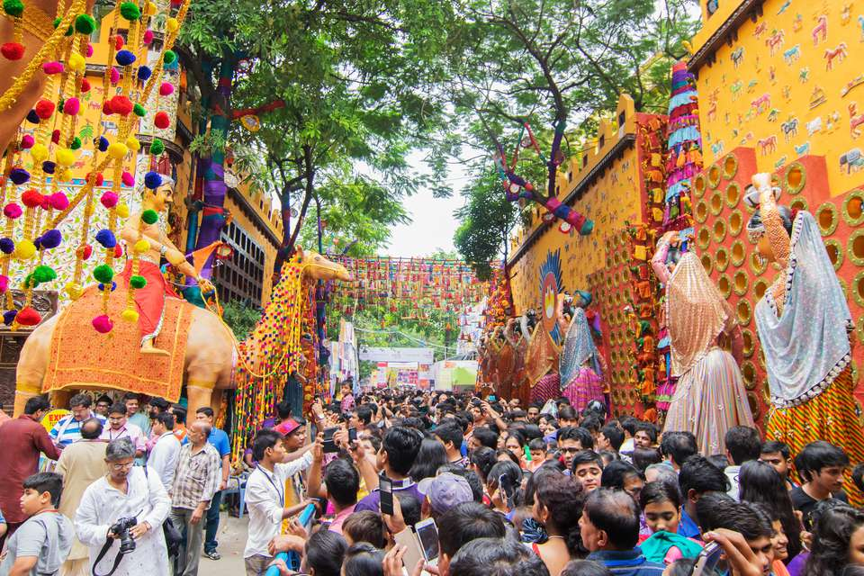
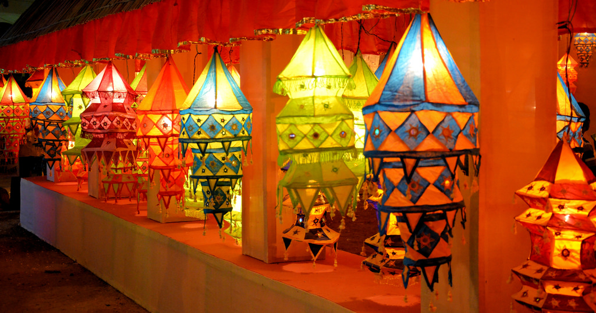
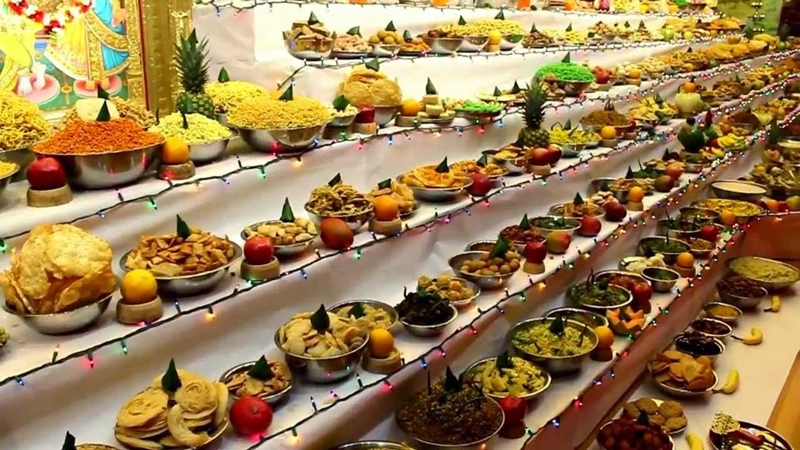
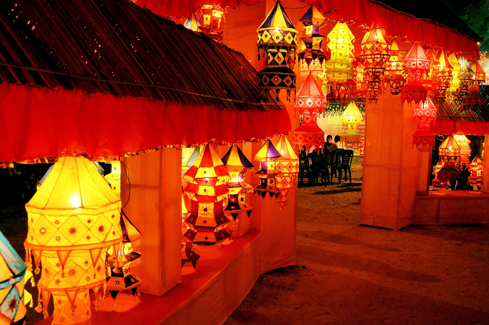
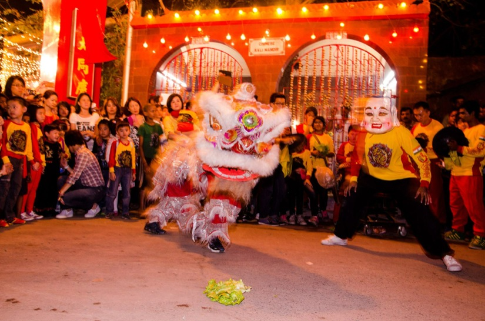
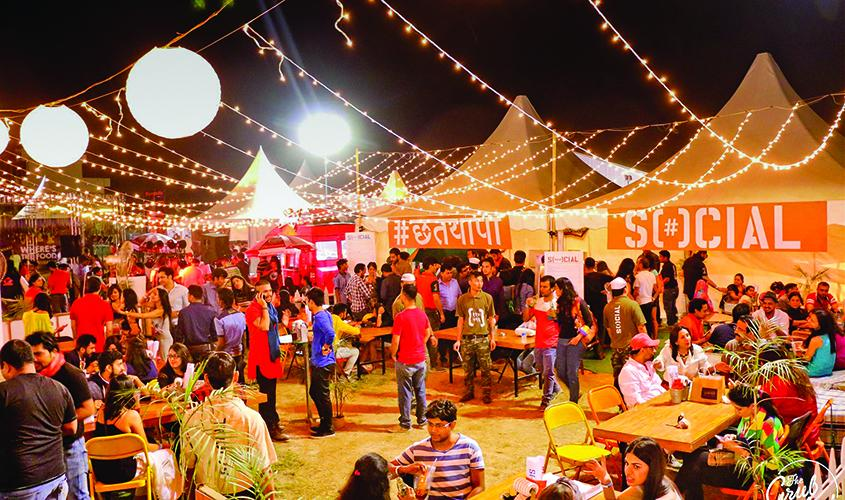
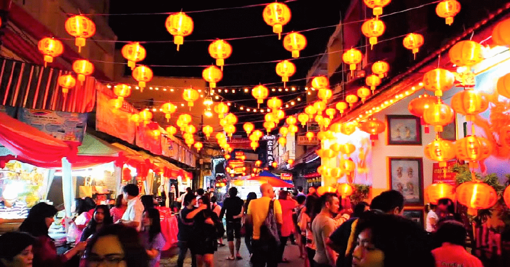
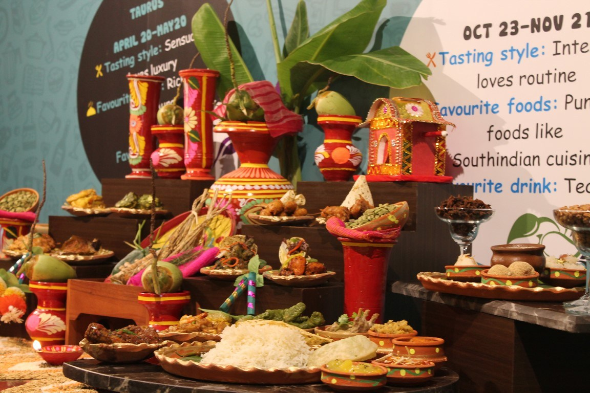
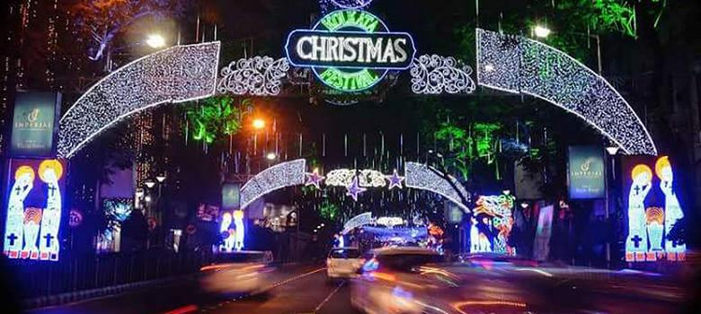

Kolkata festivals are celebrated with fun and frolic. In this section, we will provide you information on the different festivals of Kolkata, India.
Durga Puja, held in September–October, is Kolkata's most important and largest festival; it is an occasion for glamorous celebrations and artistic decorations.The Bengali New Year, known as Poila Boishak, as well as the harvest festival of Poush Parbon are among the city's other festivals; also celebrated are Kali Puja, Diwali, Holi, Jagaddhatri Puja, Saraswati Puja, Rathayatra, Janmashtami, Maha Shivratri, Vishwakarma Puja, Lakshmi Puja, Ganesh Chathurthi, Makar Sankranti, Gajan, Kalpataru Day, Bhai Phonta, Maghotsab, Eid, Muharram, Christmas, Buddha Purnima and Mahavir Jayanti. Cultural events include the Rabindra Jayanti, Independence Day(15 August), Republic Day(26 January), Kolkata Book Fair, the Dover Lane Music Festival, the Kolkata Film Festival, Nandikar's National Theatre Festival, Statesman Vintage & Classic Car Rally and Gandhi Jayanti.










.jpg)